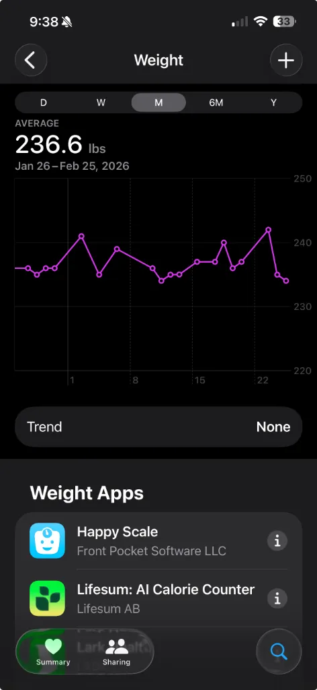
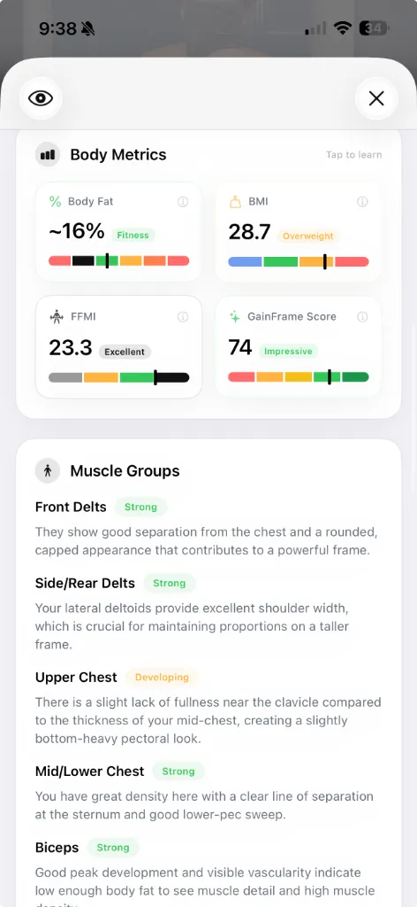

Best Body Fat Calculator from Photo: Why AI Beats Smart Scales
Your smart scale displays 14.2% body fat with confident precision. Tomorrow morning, after the same routine, it reads 16.5%. Nothing changed except your hydration levels. Here's why a body fat calculator from photo offers something fundamentally different.
Athletes and recomposition-focused trainees need trend reliability more than single-point precision. This guide compares three approaches: bioelectrical impedance analysis (BIA) found in smart scales, AI-powered photo analysis, and clinical methods such as DEXA. No consumer tool delivers clinical-grade accuracy, but some provide far more consistent trend data than others.
How BIA Technology Actually Works

Smart scales use bioelectrical impedance analysis to estimate body composition. The device sends a tiny electrical current through your legs and measures resistance[1]. Because muscle holds more water than fat, it conducts electricity differently. The scale then runs this resistance data through algorithms trained on population averages.
The limitation: you are not an average. Your unique fat distribution, muscle density, and body type may differ significantly from the dataset the algorithm learned from.
The Daily Variability Problem
Research on consumer BIA devices suggests individual readings can deviate substantially from reference methods, with some studies reporting errors of several percentage points depending on hydration status, recent food intake, and measurement timing[1].
Weigh yourself after a salty dinner and the scale registers higher fat. Step on after a long run while dehydrated and suddenly you appear leaner. These swings reflect water movement, not progress.
False Precision vs Real Accuracy
That decimal point creates an illusion of scientific measurement. Seeing 15.7% feels more trustworthy than "somewhere between 14 and 18 percent." But the decimal adds false confidence without improving accuracy.
For tracking real progress, consistency matters far more than precision. A measurement method that gives you stable, comparable readings over time beats one that fluctuates daily while displaying extra digits.
Body Fat Calculator from Photo: How AI Estimation Works

AI photo analysis takes a fundamentally different approach. Instead of measuring electrical resistance through your legs, it analyses visual geometry and muscle definition. In published research, 2D-photo models trained against DEXA scans have demonstrated the ability to recognise visual markers that correlate with specific body fat levels[2].
This approach formalises what experienced coaches have done for decades: assessing body composition by examining actual physical appearance.
Visual Markers That Indicate Leanness
Muscle Separation
Depth of lines between deltoids and triceps, or visible serratus anterior.
Vascularity
Skin texture changes that typically emerge below 12% body fat.
Proportionality
Fat distribution patterns around the lower abdomen and lower back.
Smoothing Effect
The soft layer over muscle that increases at higher body fat levels.
A smart scale cannot detect any of these indicators. It remains blind to the visual reality of your physique.
Why Geometry May Offer More Stability
Visual analysis is less sensitive to hydration fluctuations than BIA, though it is not entirely immune. Factors such as muscle pump from recent exercise, subcutaneous water retention, and lighting conditions can still affect appearance.
However, the shape of your muscles, the depth of separation lines, and the visibility of definition tend to remain more consistent day-to-day than electrical impedance readings.
Body Recomposition: The Scale's Blind Spot

The most challenging scenario for serious athletes involves body recomposition: simultaneously losing fat while gaining muscle. On a traditional scale, this can appear as zero progress. Your weight stays flat for months while your body transforms dramatically.
Many people abandon effective programmes because the number refuses to move. They never realise they are achieving exactly what they wanted.
When Zero Scale Progress Means Real Progress
Muscle is denser than fat. Gaining two pounds of muscle while losing two pounds of fat leaves your weight unchanged but your appearance transformed. Your waist shrinks. Your shoulders look broader. Definition emerges where softness existed before.
Smart scales often miss this entirely because their algorithms struggle with simultaneous tissue changes. Visual tracking captures the transformation that matters.
What to Look for in a Photo-Based Body Fat Tool
Photo-based body composition tools vary primarily by validation dataset, repeatability, and privacy controls. Before choosing a platform, consider these criteria:
- Validation methodology. The most credible systems train their models against gold-standard measurements such as DEXA scans. Ask whether the tool discloses its typical error range and the populations on which it was validated.
- Repeatability. A useful tool should produce consistent estimates when you submit similar photos taken under the same conditions. High variability between identical inputs suggests an unreliable model.
- Privacy practices. Body composition photos are sensitive data. Look for clear policies on data storage, encryption, and whether images are used for model training without explicit consent.
- Trend reporting. Single-point estimates matter less than the ability to track changes over time. Tools that compare photos across weeks or months provide more practical value than one-off readings.
Applying These Criteria: A Practical Example

Several body fat calculator from photo tools exist on the market, each with different strengths. To illustrate how these criteria work in practice, GainFrame serves as one example. Other options include apps from fitness platforms and standalone body composition services.
GainFrame provides regional analysis that scores individual muscle groups rather than reducing your physique to a single percentage. The system evaluates areas including chest, shoulders, arms, back, core, and legs based on front, side, and back photos. You can then compare submissions over time to identify which regions are progressing.
How to Take Consistent Progress Photos
Switching from scale-based tracking to photo-based analysis requires minimal equipment but benefits from consistent methodology. The technology works with standard smartphone cameras. The key is controlling variables.
Quick Checklist for Consistent Photos
- Choose a location with even, front-facing light. Avoid harsh overhead lighting or strong shadows that obscure muscle definition.
- Stand at the same distance from the camera each session.
- Maintain relaxed posture rather than flexing, unless you consistently flex in every photo.
- Take front, side, and back views for comprehensive coverage.
- Shoot at the same time of day for best comparability.
Natural window light or a well-lit bathroom often works well. Consistency in lighting and positioning matters more than having a professional setup.
Choosing the Right Tracking Method
No consumer body composition tool matches the accuracy of clinical methods like DEXA. Photo-based estimates still carry error margins, and results depend on photo quality, lighting consistency, and the specific populations on which models were trained. Use these tools to track relative change over time rather than treating any single reading as absolute truth.
- For absolute accuracy on a single measurement: Clinical DEXA remains the reference standard.
- For consistent trend tracking during recomposition: Photo-based analysis under controlled conditions offers stability that BIA cannot match.
- For BIA scales: Standardise conditions rigorously — same time of day, same hydration state, same distance from meals and exercise.
The bottom line: The core issue with BIA smart scales is not that they are useless, but that their readings fluctuate significantly based on factors unrelated to actual body composition. A body fat calculator from photo offers an alternative that relies on visual geometry — measurements based on what you actually look like, not how much water you drank before bed.
References
- How do smart scales measure body composition, and how accurate are they? — Live Science
- Advances in the estimation of body fat percentage using an artificial intelligence 2D-photo method — PMC / National Institutes of Health
- Can You Trust Smart Scale Body Fat Readings? What to Track Instead — Reshape App